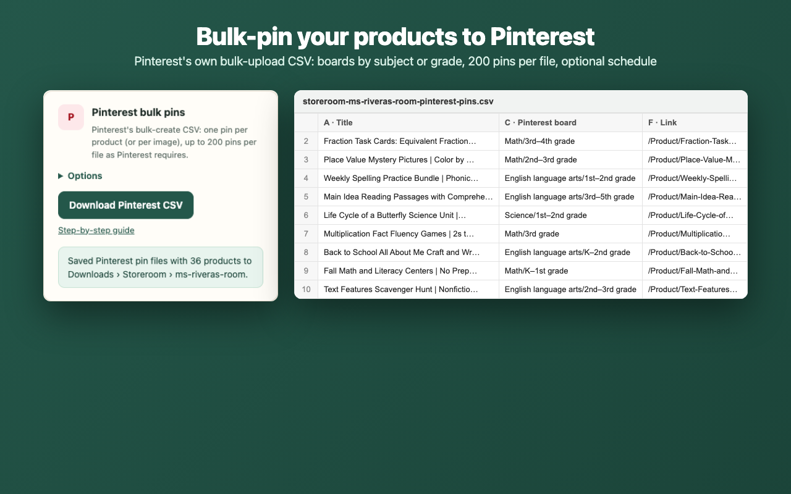

Bulk-pin your TPT products to Pinterest
Pinterest can create up to 200 pins at once from a spreadsheet (a .csv file). All it needs is a title, an image link, a board and a link for each pin. Storeroom builds that file from your TPT store, with your cover images already linked.

1. Back up your store
Follow How to back up your TPT store.
2. Make the Pinterest file
- Open Storeroom › Export › Pinterest bulk pins and open Options.
- Boards: one per subject ("Math Resources"), a subject board with a section per grade, one per grade, or one board you name. Pinterest creates any board or section that doesn't exist yet.
- Pins link to: your TPT product page, or your new shop (for example
https://yourshop.com/products/{handle};{handle}matches Storeroom's Shopify export). - Pins per product: just the cover, or every thumbnail (up to 4).
- When: publish right away, or schedule a few per day from a start date.
- Press Download Pinterest CSV. More than 200 pins are split into several files, because Pinterest accepts up to 200 per upload.
What's in each row
| Pinterest column | From your store |
|---|---|
| Title (100 characters max) | Product title |
| Media URL | Your full-size cover image |
| Pinterest board | Your board choice, e.g. Math/3rd–5th grade |
| Description (500 characters max) | The start of your description plus the grade range |
| Link | TPT or your new shop, with optional UTM tags so you can see Pinterest visits in your stats |
| Publish date | Empty (now) or your schedule |
| Keywords | Subjects, grade range, resource types, seasons |
3. Upload to Pinterest
- Use a Pinterest business account (switching is free) on a computer; bulk upload isn't available on mobile.
- Open Settings › Import content and click Upload next to "Upload .csv or .txt file".
- Choose the Storeroom file. Upload the next file once the first has finished.
Pinterest's own help page lists these columns and limits (checked October 15, 2026). If Pinterest changes them, Storeroom will update.